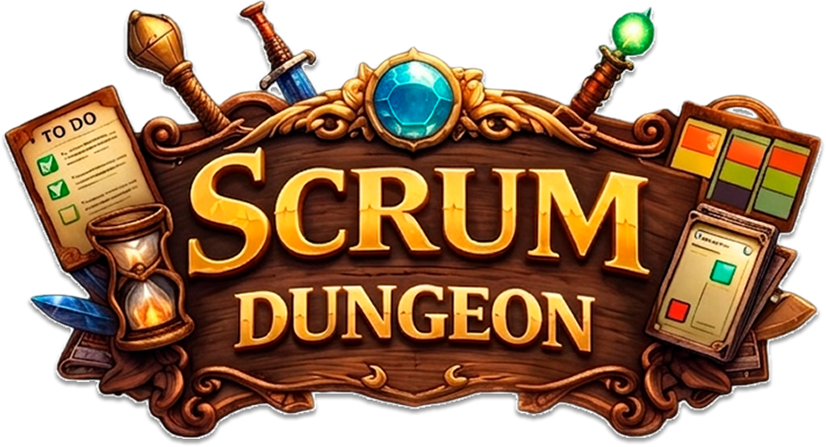
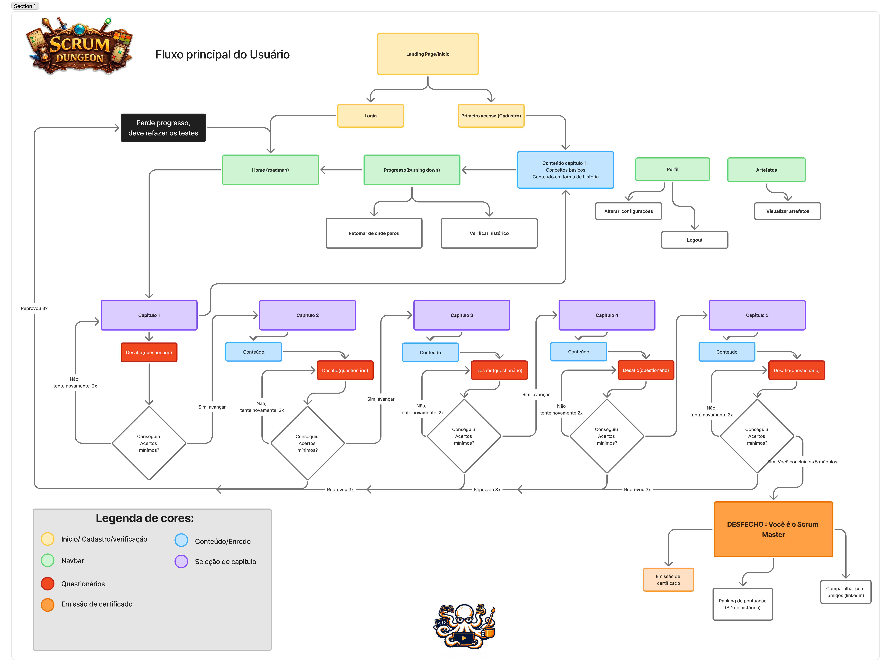

Scrum Dungeon

O PROJETO
Scrum Dungeon é uma plataforma gamificada criada para ensinar os conceitos e práticas da metodologia Scrum através de uma experiência inspirada em RPG.
MEU PAPEL
Atuei como Product Owner, fazendo a comunicação com o cliente e auxiliando na definição e priorização do backlog. Também participei da prototipação, criação dos fluxos, identidade visual, desenvolvimento front-end, arquitetura e funcionalidades do back-end.
TECNOLOGIAS
HTML · CSS · JavaScript · EJS · Node.js · Express · PostgreSQL · Figma
Planejar
Na primeira Sprint estruturamos as bases do projeto. Definimos o fluxo da experiência, casos de uso, prototipação e arquitetura, além de alinharmos a organização da equipe dentro da metodologia Scrum.

Foi muito divertido contribuir em todas as etapas desse projeto, aplicando o método Scrum enquanto pensávamos em como construir uma experiência imersiva que ensinasse sobre o próprio método.
Trabalhar em uma grande equipe foi desafiador e só foi possível graças à nossa organização, comunicação e muita adaptação.
O aprendizado que fica é sobre saber priorizar as demandas, manter a transparência e trabalhar em coletivo.
Estrutura pensada para crescer com o projeto.
Devido ao tamanho e à complexidade do projeto, organizamos o back-end de forma modular, separando responsabilidades por domínio.
Dentro de cada módulo, aplicamos uma arquitetura em camadas, com Controllers, Services e Repositories bem definidos, separando o fluxo das requisições, as regras de negócio e o acesso aos dados.
A aplicação utiliza renderização com EJS, banco de dados PostgreSQL e um fluxo de versionamento baseado em Git Flow e Pull Requests.